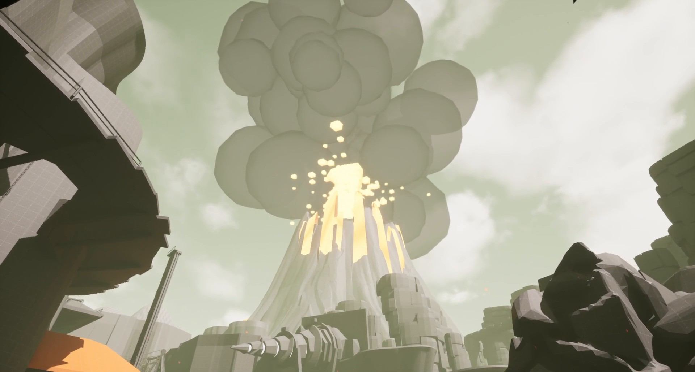
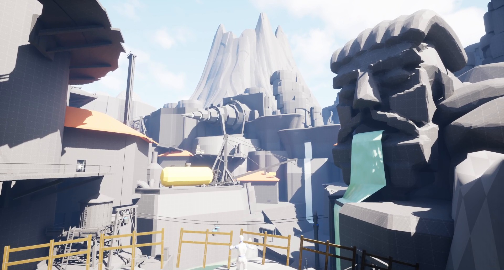
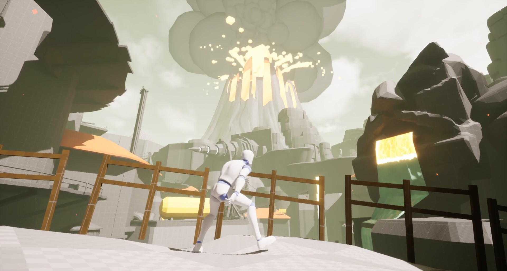
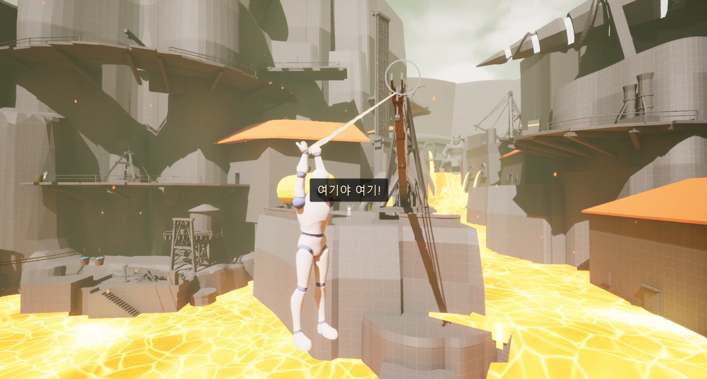
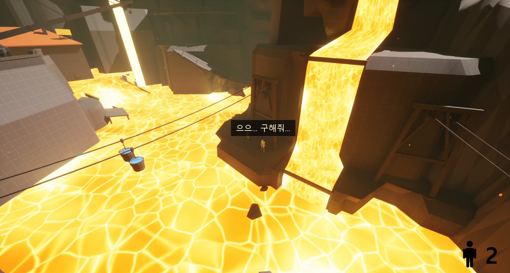

1 / 6
오픈월드 레벨디자인 원신 재해석 : 하얀 왕관궁
원신 스네즈나야 지역의 월드 퀘스트 ‘하얀 차르’의 배경인 ‘하얀 왕관궁’을 레이아웃, 동선, 퍼즐 단위로 분해해 재해석한 레벨 디자인입니다.
LEVEL DESIGN
1 / 6
원신 스네즈나야 지역의 월드 퀘스트 ‘하얀 차르’의 배경인 ‘하얀 왕관궁’을 레이아웃, 동선, 퍼즐 단위로 분해해 재해석한 레벨 디자인입니다.





1 / 5
하얀 왕관궁 다음으로 작업하고 있는 레벨입니다. 상세 내용과 영상은 준비되는 대로 올리겠습니다.